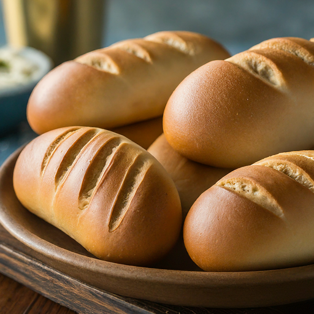
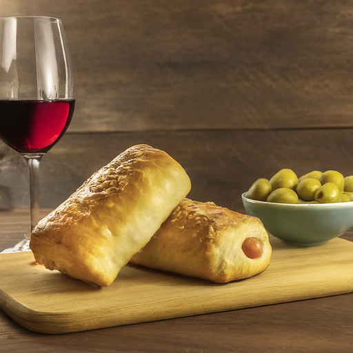
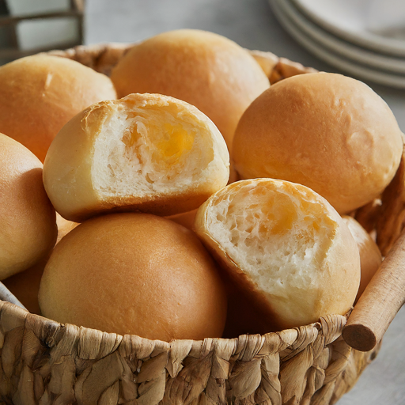
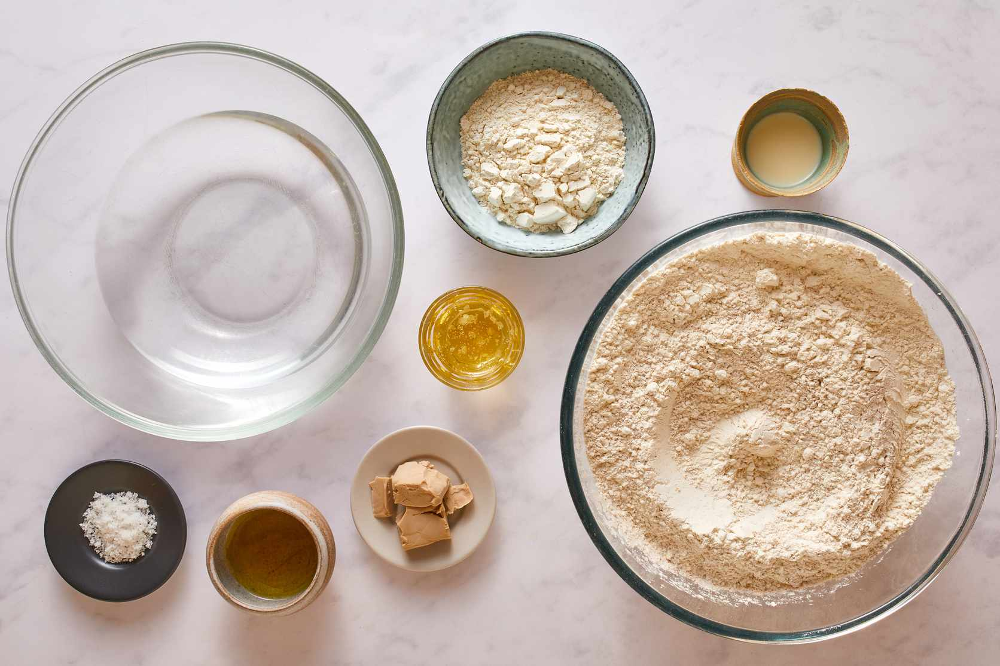
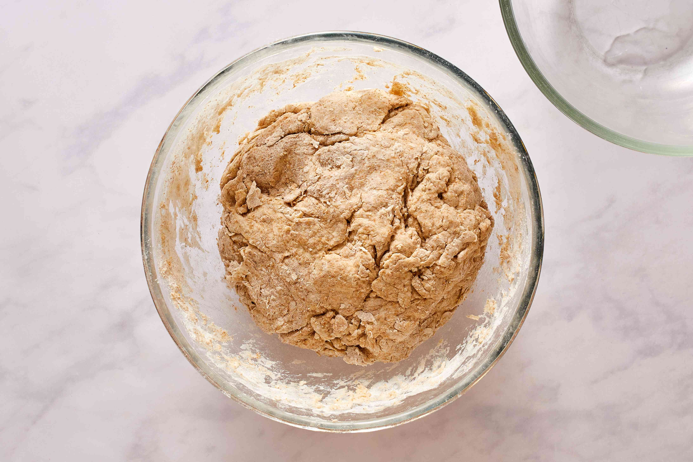
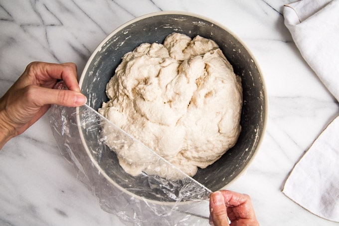
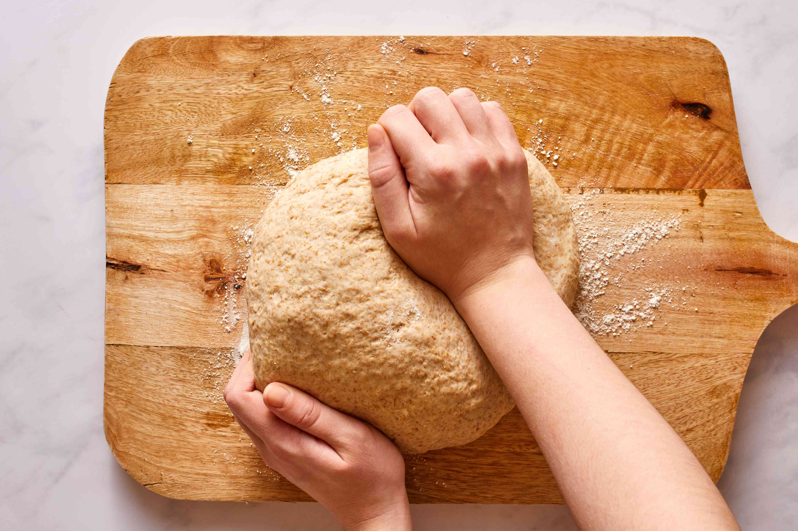
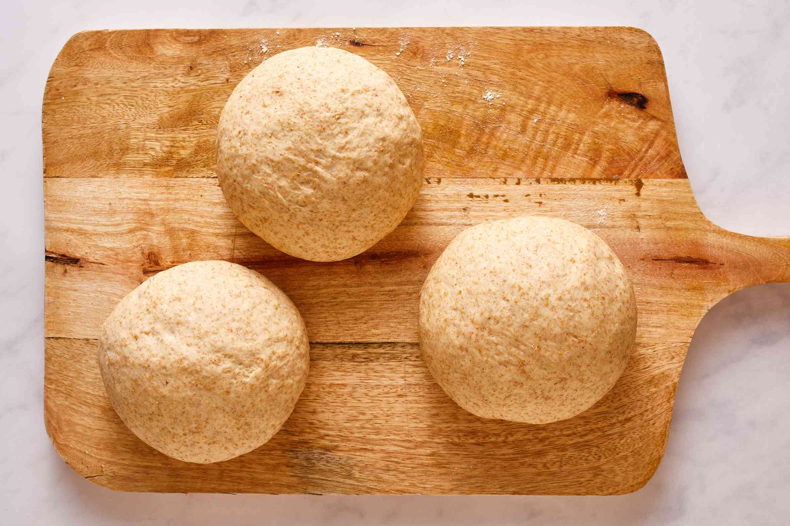

Psomi rolls, also known as Greek bread rolls, are more than just bread. They're a warm hug from the
oven, a taste of Greece in every bite, and a versatile staple that can transform any meal.
Ready to discover the magic of PSOMI ROLLS? Browse our collection of easy, authentic
recipes, learn insider tips from seasoned bakers, and join our vibrant community of psomi
enthusiasts. Welcome to the world of psomi!"


Making psomi rolls is a relatively simple process. The first step is to make the
dough. To do this, you will need to combine flour, water, yeast, salt, and olive oil in a
bowl. Mix the ingredients together until a shaggy dough forms. Then, knead the dough on a
floured surface for about 10 minutes, or until it is smooth and elastic.

Once the dough is kneaded, place it in a greased bowl and cover it with plastic
wrap. Let the dough rise in a warm place for about an hour, or until it has doubled in size.


After the dough has risen, punch it down and divide it into equal pieces. Shape each piece of
dough into a ball and place the balls on a baking sheet. Cover the baking sheet with plastic
wrap and let the dough rise for another 30 minutes. Once the dough has risen again, bake the
psomi rolls in a preheated oven at 375 degrees Fahrenheit for about 20 minutes, or until
they are golden brown.
Psomi rolls are small, round breads that are similar to dinner rolls. They are made with a dough that
is leavened with yeast, and they are baked in a hot oven until they are golden brown. Psomi rolls
can be made with all-purpose flour, bread flour, or a combination of both. They can also be
flavored with herbs, spices, or other ingredients.